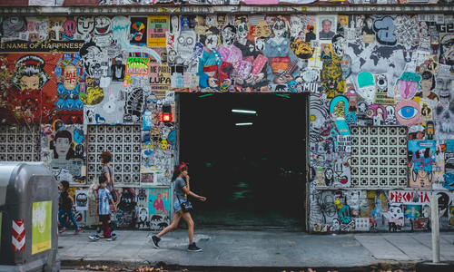
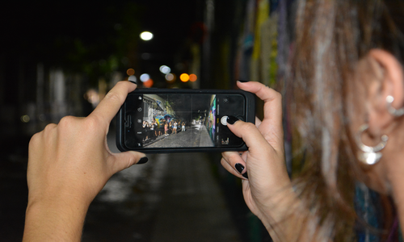
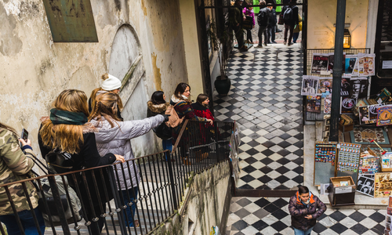
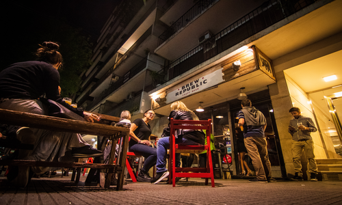

Reviews
Mirá lo que tienen para decir aquellos que ya vivieron la experiencia Turistearte BA!
Kristin
"¡Este fue un excelente recorrido y Camila es increíble! Me encantó experimentar el arte y escuchar las historias detrás de ellos. Realmente no creo que hubiera notado todo el gran arte por mi cuenta, por lo que fue necesario tener un guía turístico conocedor. Camila definitivamente conocía sus cosas y se nota que es muy apasionada de ello, lo que hizo que el recorrido fuera aún más especial. Me gusta cómo personaliza cada recorrido y no lleva a todos los grupos a ver las mismas piezas.
¡Definitivamente lo recomiendo si estás en Buenos Aires!"

¡Conocé más sobre nuestras salidas!
Belu
"El plan no puede ser más perfecto: amigos + turismo local + birritas en algún bar copado! Ese combo logra causar la sensación de "estar de vacaciones", aunque sea un día de semana laboral, de hecho, es el plan ideal para cortar con la semana!!!"

¡Conocé más sobre nuestras salidas!
Anita
"Turistearte es todo lo que está bien en propuestas alternativas.
Te regala una maquina del tiempo en tu propia ciudad, acompañada de información que se va conectando entre sí para devolvernos una bellísima Buenos Aires"

¡Conocé más sobre nuestras salidas!
Ceci
"A mi que disfruto tanto de viajar, ésta propuesta me cambió la mirada de la gran Ciudad donde habito.
Me hace sentir que estoy de viaje y mejor aún, en mí Ciudad natal, que es de las más lindas que conocí."

¡Conocé más sobre nuestras salidas!